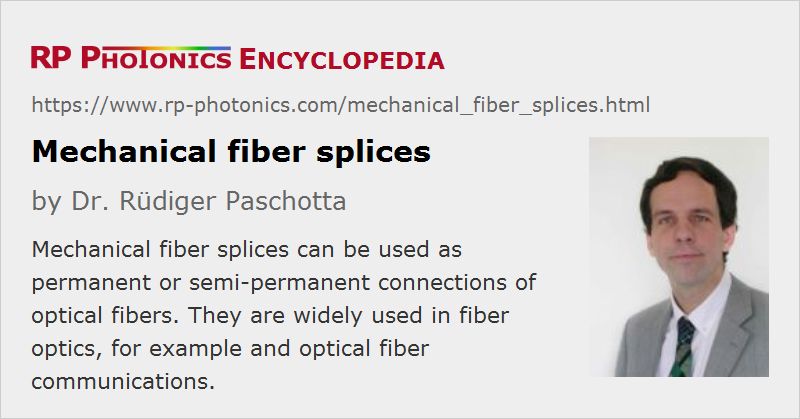

Mechanical Fiber Splices
Definition: permanent or semi-permanent connections of optical fibers which are held in place with mechanical means
More general term: fiber splices
German: mechanische Spleiße
Category: fiber optics and waveguides
How to cite the article; suggest additional literature
Author: Dr. Rüdiger Paschotta
In fiber optics, for example in the context of optical fiber communications, it is often necessary to connect the ends of optical fibers such that light from one fiber can get into the other fiber without losing much of its optical power.
One of the possibilities is mechanical splicing. Here, one uses a simple kind of alignment device which holds the fiber ends together such that the two fiber cores are well aligned to each other and there is no significant air gap in between the ends. Once such a splice is applied, the connection should be fairly stable, maintaining a high coupling efficiency even if the connecting fibers are moved.
The Splicing Process
The details of the splicing process depends on the equipment used; one should follow the instructions of the manufacturer. The process should normally not be too complicated. A typical process may be as described in the following.
In case that one works with fiber cables instead of simple fibers, the cable ends also need to be prepared appropriately. Typically, one has to nip through the jacket with a suitable tool, strip off the jacket, and cut off any kevlar to obtain the fiber alone over a length of a few centimeters.
The fiber ends need to be prepared such that one has clean and flat surfaces, which should be perpendicular to the fiber axis. First, one has to remove the buffer coating from the fibers over some length. Thereafter, one needs to clean and cleave the ends. Cleaving is normally sufficient for surface generation, although polishing the fiber ends could lead to even better results. However, accurate cleaving is key for obtaining high performance of the splice.
One then inserts one of the fibers into the splicing device. That may contain a transparent window, so that one can monitor the position of the fiber end before finally fixing it by tightening a locking nut. Thereafter, one carefully inserts the second fiber, until the two ends meet, and fixes that end again with its locking nut.
Sometimes, one applies a thin layer of some index matching gel or a transparent epoxy between the fiber ends in order to further reduce the reflection losses. That should lead to a small insertion loss (e.g. <0.1 dB) and also to a large return loss, i.e., to negligibly weak reflections at the joint. The exact width of the gap, filled with the index matching agent, is not critical in this case. However, this technique is not ideal for splices which are supposed to be removed later on. Also, one should be sure to have an index matching agent which stays stable over time.
Details may have to be adjusted, or other splicing equipment used, if the fibers have a non-standard diameter.
Depending on the used splicing equipment, the resulting connection may be permanent or removable. In the latter case, one may only need to clean the fiber ends (particularly if an index matching gel was used), but not to cleave them again.
Testing of Splices
After splicing, one may want to test the splice quality. For example, one can use a visual fault locator, which is essentially a visible laser source. When some light is launched into the fiber, a poor quality splice will exhibit a lot of stray light, which can be observed if the splicing device is transparent. In case of a good splice, not much stray light will be seen.
A more elegant method, which however requires expensive equipment, is measuring the insertion loss and the return loss with an optical time-domain reflectometer.
Comparison with Fusion Splicing
An alternative to mechanical splicing is fusion splicing of fibers. Compared with that, advantages of mechanical splicing are that no expensive equipment is needed, that the process can be tentatively faster, that it can more easily be performed in the field, and that the connection can usually be removed without re-cleaving the fibers. On the other hand, the splice quality is typically worse in terms of insertion loss and return loss. Also, the cost per splice (when ignoring the upfront cost of fusion splicing) is higher.
Suppliers
The RP Photonics Buyer's Guide contains 3 suppliers for mechanical fiber splicing equipment.
Questions and Comments from Users
Here you can submit questions and comments. As far as they get accepted by the author, they will appear above this paragraph together with the author’s answer. The author will decide on acceptance based on certain criteria. Essentially, the issue must be of sufficiently broad interest.
Please do not enter personal data here; we would otherwise delete it soon. (See also our privacy declaration.) If you wish to receive personal feedback or consultancy from the author, please contact him e.g. via e-mail.
By submitting the information, you give your consent to the potential publication of your inputs on our website according to our rules. (If you later retract your consent, we will delete those inputs.) As your inputs are first reviewed by the author, they may be published with some delay.
See also: fiber joints, fusion splicing of fibers, fiber cables, optical time-domain reflectometers
and other articles in the category fiber optics and waveguides
|  |
If you like this page, please share the link with your friends and colleagues, e.g. via social media:
These sharing buttons are implemented in a privacy-friendly way!